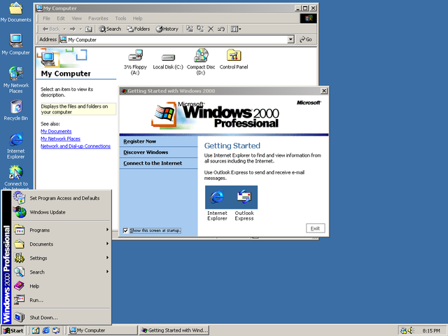
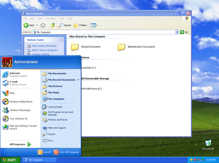

Microsoft Windows, izdelek podjetja Microsoft, je najbolj razširjen računalniški operacijski sistem, predvsem zaradi preprostega in intuitivnega uporabniškega vmesnika, ter široke programske podpore.
Začetek Windowsa sega v leto 1981, ko so začeli projekt Interface Manager.
Naznanjen je bil novembra 1983 pod imenom Windows 1.0, vendar je izšel šele novembra 1985, zaradi napak s tipkovnicami.
Kratek pregled od začetka do danes:
• Windows 1.0
Prva različica MS Windowsa z 16-bitnim operacijskim sistemom z grafičnim uporabniškim vmesnikom.
Vseboval je programe slikar, kalkulator, koledar, pisalni program, uro ter nadzorno plošco.
Used with permission from Microsoft
• Windows 2.0 (oktober 1987)
Izboljšava Windowsa 1.0. Vsebuje izboljšave v programih in boljšo podporo za spomin ter podporo za več grafičnih kartic.
Used with permission from Microsoft
• Windows 2.1x (maj 1988)
Vseboval je podporo za 386 in 286 procesorje.
Kot zanimivost: Apple je vložil tožbo proti Microsoftu, saj je bil Windows 2.0 identičen Apple Lisi.
Apple je na sodišču izgubil.
• Windows 3.0 (maj 1990) in 3.1 (marec 1992)
Imela sta izboljšan uporabniški vmesnik in gonilniški standard VxD.
Windows 3.1 je požel uspeh, saj ga še danes uporabljajo v bankomatih in letaliških terminalih.
Used with permission from Microsoft
• Windows 95 (avgust 1995)
Je prvi 32-bitni operacijski sistem namenjen domačim uporabnikom, ki je vseboval popolnoma nov uporabniški vmesnik, podporo za daljša imena, Internet Explorer, avtomatsko zaznavanje in namestitev nove strojne opreme.
Prvič je bilo mogoče trajno shraniti ikone in datoteke na namizje.

Used with permission from Microsoft
• Windows 98 (junij 1998)
Je bil prenovljen Windows 95 z boljšo podporo za USB naprave, prenovljenim namizjem in drugimi izboljšavami.
Požel je zelo velik uspeh, saj so že prvi dan prodali 250.000 kopij.

Used with permission from Microsoft
• Windows 2000 (februar 2000)
Vseboval je mnogo novosti kot je nov datotečni sistem NTFS, ki je podpiral datoteke večje od 4 gigabajtov; sistem kodiranja datotek; izboljšano dosegljivost; obnovitveno konzolo in sistemska orodja.
Namenjen je bil strežnikom in poslovnim uporabnikom.

Used with permission from Microsoft
• Windows XP (september 2000)
Namenjen je predvsem domačim uporabnikom. Vsebuje prenovljen uporabniški vmesnik in veliko novosti (npr.: Windows Explorer - ogled slik v mapi kot na filmskem traku).

Used with permission from Microsoft
• Windows Vista (januar 2007)
Med Visto in XP je največji časovni presledek v zgodovini Windows.
Bila je mnogokrat preložena in veliko kritizirana zaradi počasnega vmesnika. Prav tako ima veliko novosti, kot so npr.: Windows Aero, Windows Search, Windows Defender, Pošta Windows...

Used with permission from Microsoft
• Windows 7 (oktober 2009)
Medtem kot je Windows Vista vsebovala številne novosti, je bil Windows 7 zasnovan kot manj radikalna nadgradnja, s ciljem zagotoviti kompatibilnost s strojno in programsko opremo, ki ju je podpirala že Vista.

Used with permission from Microsoft
• Windows 8 (oktober 2012) in 8.1 (oktober 2013)
Osnova je podobna Windows 7 vendar so nekatere stvari izboljšane, druge pa povsem nove npr. zaklep zaslona, Internet Explorer 10, Windows Store, slikovno geslo, izboljšan Windows Explorer, manjša poraba RAMa.
Namenjen namiznim, prenosnim, tabličnim in all-in-one računalnikom.

Used with permission from Microsoft
• Windows 10 (november 2015)
Naslednik in nadgradnja Microsoftovega operacijskega sistema Windows 8.1.
Med najbolj pomembne novosti novega operacijskega sistema spadajo: Microsoft Edge, Cortana, PowerShell, Hello.
Windows 10 je izšel v 4 glavnih različicah:
• Home - za domačo rabo,
• Pro - za poslovne uporabnike,
• Enterprise - za strežnike,
• Education - za vzgojne ustanove.
Used with permission from Microsoft